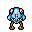
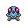

Pokédex / #072

Tentacool #072
WaterPoison
Its eyes are as transparent as crystals. From them, it shoots mysterious beams of light.
Generation 1 · Kanto

Stats
| Attack | 40 | |
|---|---|---|
| Defense | 35 | |
| Sp. Atk | 50 | |
| Sp. Def | 100 |
In the wild
| Wild level | 15–25 |
|---|---|
| HP | 40 |
| Experience | 10 |
| Egg groups | Water 3 |
Evolution
- Evolves into Tentacruel at level 35.
Moves
| Level | Move | Type | Category | Power | Energy | Cooldown | Effect | |
|---|---|---|---|---|---|---|---|---|
| 1 | Tackle | Normal | Physical | 15 | 15 | 1s | Tackle is one of the most common and basic moves a Pokemon learns. It deals damage with no additional effects. | |
| 5 | Poison Sting | Poison | Physical | 15 | 20 | 5s | Poison Sting inflicts damage and has a 30% chance of poisoning the target. | |
| 10 | Acid | Poison | Special | 40 | 40 | 6s | Acid deals damage and has a 10% chance of lowering the target's Special Defense by one stage. | |
| 15 | Supersonic | Normal | Status | – | 20 | 14s | Supersonic causes the target to become confused. | |
| 20 | Bubblebeam | Water | Special | 65 | 70 | 16s | Bubblebeam deals damage and has a 10% chance of lowering the target's Speed by one stage. | |
| 25 | Water Pulse | Water | Special | 60 | 65 | 9s | Water Pulse deals damage and has a 20% chance of confusing the target. | |
| 30 | Wrap | Normal | Physical | 35 | 45 | 13s | Wrap deals damage and lower the Speed of the target by two stages. |
Field abilities
WaterfallSurfDiveCut
Special abilities
Clear BodyLiquid Ooze
Egg moves
AcupressureAqua RingAurora BeamBubbleConfuse RayHazeKnock OffMirror CoatMuddy WaterRapid SpinTickle
Technical machines
BideBlizzardBubblebeamDouble EdgeDouble TeamGiga DrainHailIce BeamIcy WindMega DrainMimicPoison JabRageRain DanceReflectRestSafeguardSkull BashSludge BombSubstituteSwords DanceTake DownToxicWater GunWater Pulse
Drops
| Item | Amount | Chance | |
|---|---|---|---|
| water gem | 1–3 | 100% | |
| venom pendant | 1 | 20% | |
| water pendant | 1 | 12.5% | |
| ruby | 1 | 8% | |
 | tentacool doll | 1 | 0.1% |
| Splash Plate | 1 | 0.001% | |
| Toxic Plate | 1 | 0.001% | |
| TM 11 | 1 | 0.001% |